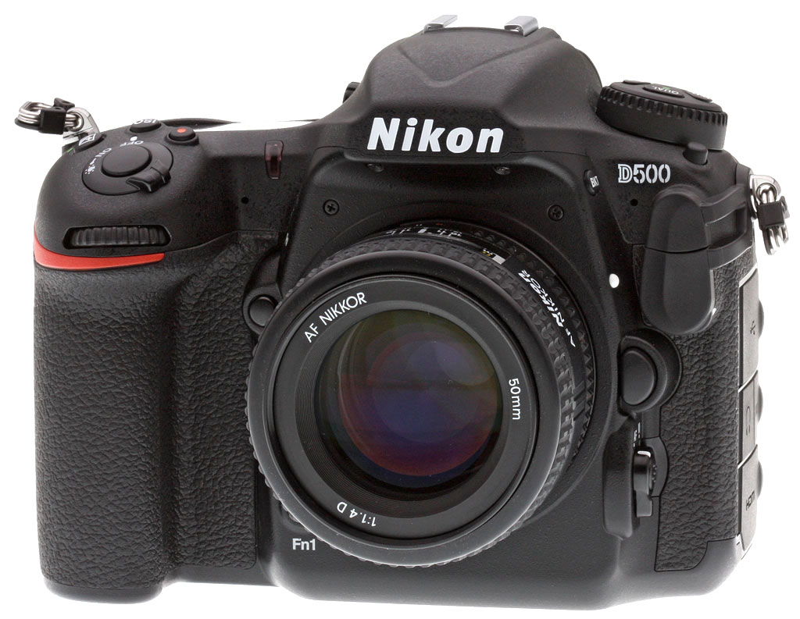

About Us
Nikon has redesigned the art of photography
Its products include camera, camera lens, binoculars, microscopes, ophthalmic lenses, measuring instruments, rifle scope, sporting scopes, and the steppers used in photolithography steps of semiconductor fabrication, of which it is the world's second largest manufacturer.
Nikon Corporation (株式会社ニコン Kabushiki-gaisha Nikon?) (UK /ˈnɪkɒn/ or US /ˈnaɪkɒn/; About this sound listen (help·info)[nikoɴ]), also known just as Nikon, is a Japanese multinational corporation headquartered in Tokyo, Japan, specializing in optics and imaging products. Its products include cameras, camera lenses, binoculars, microscopes, ophthalmic lenses, measurement instruments, rifle scopes, spotting scopes, and the steppers used in the photolithography steps of semiconductor fabrication, of which it is the world's second largest manufacturer.[2] The companies held by Nikon form the Nikon Group.[3] Among its products are Nikkor imaging lenses (for F-mount cameras, large format photography, photographic enlargers, and other applications), the Nikon F-series of 35 mm film SLR cameras, the Nikon D-series of digital SLR cameras, the Coolpix series of compact digital cameras, and the Nikonos series of underwater film cameras. Nikon's main competitors in camera and lens manufacturing include Canon, Sony, Fujifilm, Panasonic, Pentax, and Olympus. Founded on July 25, 1917 as Nippon Kōgaku Kōgyō Kabushikigaisha (日本光学工業株式会社 "Japan Optical Industries Co., Ltd."), the company was renamed to Nikon Corporation, after its cameras, in 1988. Nikon is a member of the Mitsubishi group of companies (keiretsu).[4]
